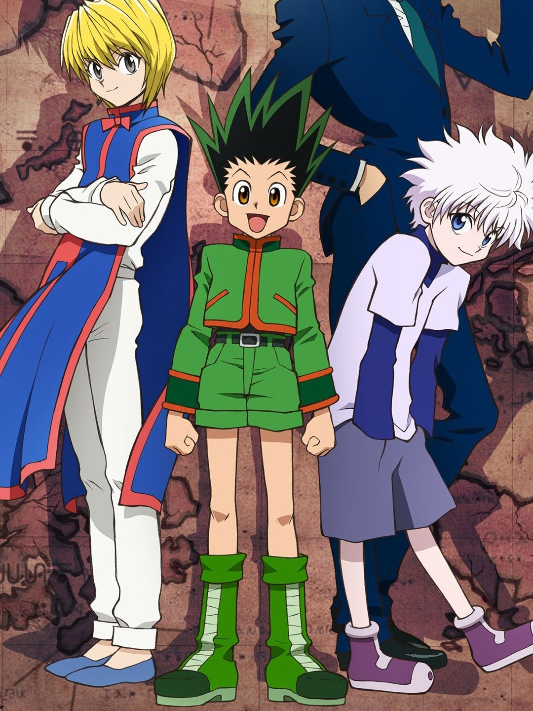

Hunter x Hunter
YOSHIHIRO TOGASHI

Gon might be a country boy, but he has high aspirations. Despite his Aunt Mito's protests, Gon decides to follow in his father's footsteps and become a legendary Hunter. The Hunter hopefuls begin their journey by storm-tossed ship, where Gon meets Leorio and Kurapika, the only other applicants who aren't devastated by bouts of seasickness. Having survived the terrors of the high seas, Gon and his companions now have to prove their worth in a variety of tests in order to find the elusive Exam Hall. And once they get there, will they ever leave alive...?